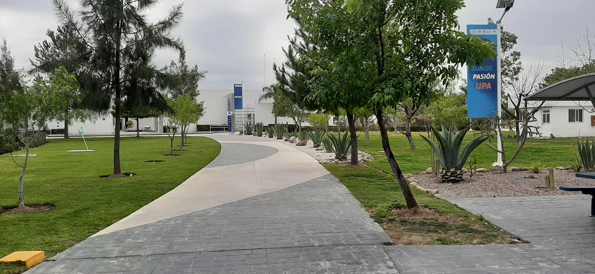

¿Quiénes sómos?

La Ingeniería en Sistemas Estratégicos de Información es la profesión que desarrolla una visión sistémica, tecnológica y estratégica, ofreciendo soluciones inteligentes a los procesos de las organizaciones, implementando sistemas innovadores de información que apoyen la toma de decisiones. Evaluada en el Nivel 1 por los Comités Interinstitucionales para la Evaluación de la Educación Superior, A.C. (CIEES).
Así como acreditada por el Consejo Nacional de Acreditación en Informática y Computación, A.C. (CONAIC).
Campo laboral
Podrás desempeñarte profesionalmente en distintos sectores como:
- Industria del software y redes
- En toda organización donde se requiera el manejo y obtención estratégica de lainformación, realizando funciones de gerente o director de sistemas
- Consultor o asesor de proyectos multidisciplinarios
- Centros de investigación tecnológica como profesional independiente, con la posibilidad de establecer tu propia empresa